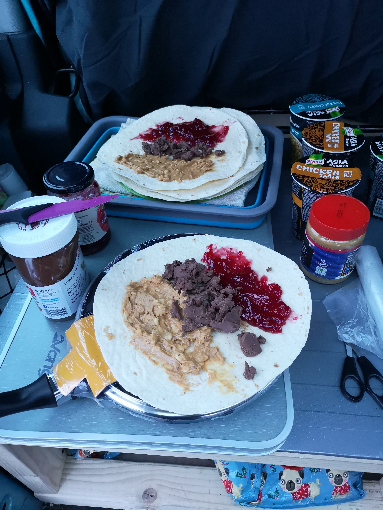

Easy to make, minimal washing up and freakin delicious to boot! Great
after a long day of riding the sea, dangling off of rock or sliding down the snow!
Time:
Prep = 20 Minutes
Cook = 10 Minutes
Serves: 4 or 2 starving Dirtbags
Ingredients
Quantity
Chicken Breasts
4
Peppers
2
Onion
1
Red Pesto
Couple of good dollops
Wraps
4 or more
Step 1: Dice the chicken breast, slice the onion and
peppers.
Step 2: Chuck a bit of oil in the pan on a high heat and then
add the chicken (we use a big arse Wok). Cook until the chicken is almost cooked
through
Step 3: Turn the heat to medium and add the veg. Cook until the
onion is a wee bit golden.
Step 4: Add the pesto, stir well and serve up in some sweet
wraps. Wrap like a pimp.
Lazy Fancy Muscles
Less cooking and more of a life hack. Make all the other surfers jealous of
your fancy shmancy hobo breakfast while you wait on the tides for surfing.
Time:
Prep = 2 Minutes
Cook = 10 Minutes
Serves: 2
Ingredients
Quantity
Ready to cook Muscles in sauce
1kg
Slices of Thick Bread
4
Step 1: Put the Muscles in a pot on medium heat for 5-10 minutes.
Step 2: Eat the Muscles straight out of the pan.
Step 3: Mop up the delicious sauce straight out of the pot, helps with the washing up too!
Dirty Chocolate Jam and Peanut Spread Wrap

We religiously make these for snowboarding lunches. Got Protein, Sugar and Chocolate, what else could you want?
Time = 5 Minutes
Serves: 1 per wrap (2 wraps if you're going to be sending it!)
Ingredients
Quantity
Wrap
1 per Wrap
Chocolate Spread
Good knife full per wrap
Jam
Good dollop per wrap
Peanut Butter
Healthy spattering per wrap
Step 1: Open wrap.
Step 2: Spread Chocolate Spread in the middle of the wrap. If you’re van hoboing in the mountains in winter there’s a good chance you’ll have to break your frozen hard Chocolate Spread up, a butter knife is good for this, or a steak knife works as well.
Step 3: Spread Jam on the top half of the wrap. It is essential this goes on the top half and not the bottom half.
Step 4: Spread Peanut Butter on the bottom half of the wrap. This should make your wrap go from pink to dark brown to light brown. This is essential for flavour.
Step 5: Wrap lovingly and enjoy.
Scumbag Stirfry
Fucking scrum-diddly-umptious, easy and filling. Eaten straight from the Wok or Pot adds on the Dirtbag credibility and saves on the washing up.